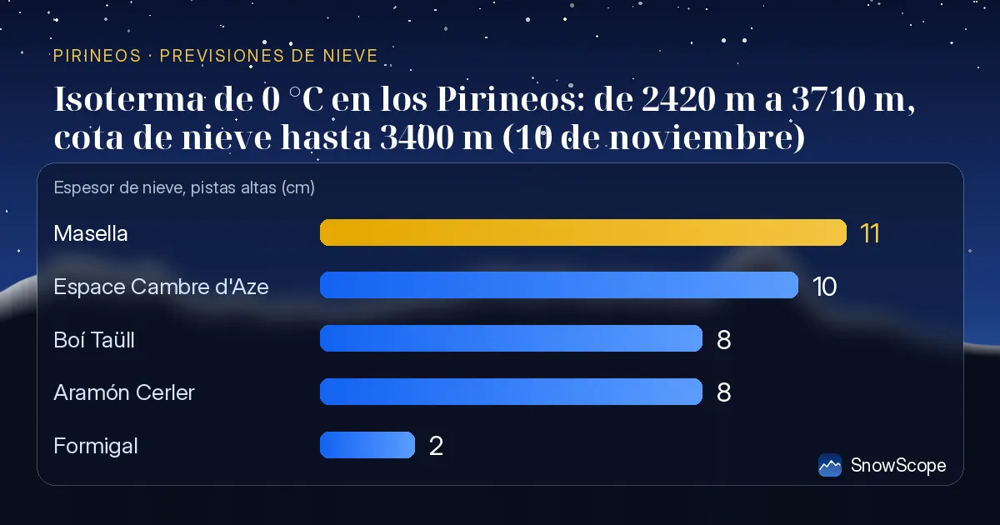
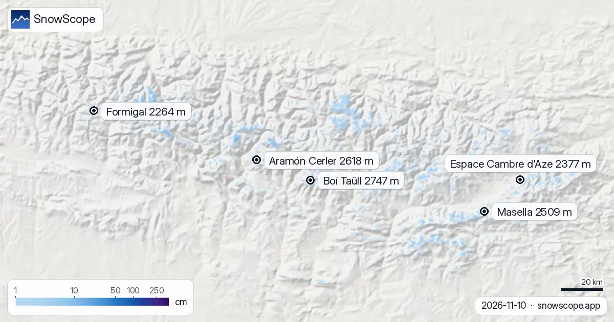
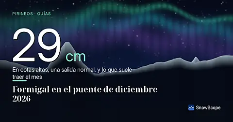
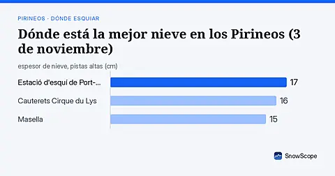

Isoterma de 0 °C en los Pirineos: de 2420 m a 3710 m, cota de nieve hasta 3400 m (10 de noviembre)
El martes 10 de noviembre en los Pirineos, el nivel de 0 °C se extiende desde 2910 m en su punto más frío hasta 3710 m en el más cálido. La línea de nieve—donde la lluvia se convierte en nieve húmeda—se sitúa unos 300 m más abajo, llegando hasta 3400 m en Masella durante la tarde. Durante los próximos tres días, el nivel de congelación bajará gradualmente, llevando la línea de nieve a altitudes más bajas el viernes.
Consulta la previsión de nieve en tiempo real de Boí Taüll en la app SnowScopeEspesor de nieve, alertas de nieve polvo y mapa 3D, gratis.
Cómo se mueve el nivel de congelación a lo largo de la semana
El martes 10 de noviembre es el día más cálido: 0 °C alcanza 3710 m en su punto más alto. El miércoles 11 de noviembre se vuelve más frío, con el nivel de congelación cayendo a 2740 m al amanecer y 3370 m por la tarde. El jueves 12 de noviembre continúa la caída: 2580 m a 3280 m. Para el viernes 13 de noviembre, el nivel de 0 °C ha caído dramáticamente a entre 2420 m y 2730 m—un cambio de más de 1000 metros en cinco días.
Este enfriamiento rápido es importante porque cambia dónde cae la precipitación como nieve. Al principio del período, la mayoría de la lluvia llega a las zonas de media montaña; el viernes, la nieve comienza en elevaciones mucho más bajas.
| Estación | Espesor de nieve | Nieve nueva, 72 h | Previsto, próximos días | Cota máx. |
|---|---|---|---|---|
| Boí Taüll | 8 cm | 0 cm | 14 cm | 2747 m |
| Aramón Cerler | 8 cm | 0 cm | 15 cm | 2618 m |
| Masella | 11 cm | 0 cm | 1 cm | 2509 m |
| Espace Cambre d'Aze | 10 cm | 0 cm | 1 cm | 2377 m |
| Formigal | 2 cm | 0 cm | 7 cm | 2264 m |

Dónde la lluvia se convierte en nieve en cada estación
Masella y Espace Cambre d'Aze, ambas en el lado oriental, ven las líneas de nieve más altas el martes: cerca de 3400 m. Aquí toda la montaña está en la zona de lluvia o nieve húmeda si hay precipitaciones. La línea de nieve de Aramón Cerler se mantiene cerca de 2900 m el martes, así que la lluvia domina en todas las elevaciones.
Formigal, más baja y más expuesta, tiene una línea de nieve alrededor de 3000 m el martes. Solo la cumbre vería nieve; en todas partes la lluvia o nieve húmeda. Boí Taüll, con su base más alta en 2039 m, ve la línea de nieve cerca de 3200 m—aún bien por encima de la cumbre—así que la estación entera está en territorio de nieve húmeda si llueve.

Peligro de lluvia sobre nieve durante tres días
Las cinco estaciones corren riesgo de lluvia sobre nieve el martes, miércoles y jueves. Boí Taüll tiene unos 8 cm en las laderas altas con la línea de nieve por encima de media montaña los tres días. Aramón Cerler tiene 8 cm en la cumbre; Masella conserva 11 cm. Cuando llueve sobre nieve existente tan fina, el manto se vuelve pesado y húmedo primero, luego se congela duramente durante la noche, creando superficies heladas.
Saint-Lary, al oeste de la cresta principal, está pronosticada que recibirá 69 mm durante los próximos cinco días, con la línea de nieve cerca de 2690 m durante la lluvia. Baqueira-Beret verá 28 mm, con la línea de nieve alrededor de 2810 m. Ambas estaciones tienen riesgo de nieve húmeda en elevaciones de media montaña durante tres días consecutivos.
Giro brusco del viernes: cuándo llega el aire frío
El viernes 13 de noviembre marca un punto de inflexión. El nivel de congelación cae a 2420 m—lo suficientemente bajo para que la línea de nieve llegue a 2300 m o por debajo en la mayoría de estaciones. El pico de Formigal en 2264 m entra en la zona de congelación durante todo el día por primera vez. Las laderas altas en todas partes pasan de riesgo de nieve húmeda a potencial de nieve seca, aunque solo se pronostican pequeñas cantidades.
Este momento es importante: los pequeños totales en el pronóstico (1 cm a 7 cm el viernes) se adhesionarán mal a la nieve cálida y húmeda de días anteriores. Cualquier cobertura nueva se sentará encima de una capa helada.
Qué significa esto para los esquiadores
Las bajadas de principios de semana en laderas altas de cara norte se endurecen conforme avanza la mañana; la nieve de tarde se convierte en nieve granulada. El viernes, las caras norte permanecen congeladas más tiempo, pero la base de nieve nueva es fina y se asienta sobre hielo de la lluvia anterior.
El pronóstico del nivel de congelación puede cambiar entre 300 y 400 metros si el patrón meteorológico varía. Consulta el mapa de nuevo el miércoles por la noche o el jueves por la mañana para ver si las condiciones han subido o bajado.
Consejos para esquiadores
- Martes a jueves: busca laderas de cara norte en zonas altas temprano por la mañana antes de que el calor ablande la superficie; evita elevaciones bajas donde domina la lluvia.
- Viernes: el manto nivoso se vuelve estable y frío, pero la profundidad es limitada (1 a 7 cm de nieve nueva). Ten cuidado con capas heladas bajo la nieve nueva.
- Consulta el boletín de aludes oficial antes de cualquier plan fuera de pista o de travesía, especialmente los días con riesgo de lluvia sobre nieve (martes, miércoles, jueves).
- El pronóstico del nivel de congelación tiene incertidumbre de varios cientos de metros; revisa el mapa de SnowScope la noche anterior a tu salida.
- La nieve que aparece en el mapa no confirma que una estación esté en funcionamiento: verifica el estado de los remontes y las fechas de apertura en la web de cada estación antes de ir.
Sobre estas cifras
Los espesores de nieve de las estaciones son la nieve más profunda en las pistas altas en la fecha indicada; son estimaciones para una zona, no una medida en un punto. Las previsiones pueden cambiar. Consulta siempre el boletín oficial de aludes antes de salir fuera de pista.
Boletines oficiales de aludes: Météo-France / Meteocat / AEMET
Citar este informe
Para investigación, docencia o prensa: cifras y gráficos reutilizables libremente bajo CC BY 4.0 con esta cita.
SnowScope (2026), Isoterma de 0 °C en los Pirineos: de 2420 m a 3710 m, cota de nieve hasta 3400 m (10 de noviembre), https://snowscope.app/blog/es/2026/11/pyrenees-freezing-level-snow-line-10-november-2026.html, consultado el 2026-11-10
SnowScope (Atlas Labs). (2026, November 10). Isoterma de 0 °C en los Pirineos: de 2420 m a 3710 m, cota de nieve hasta 3400 m (10 de noviembre). SnowScope snow reports. https://snowscope.app/blog/es/2026/11/pyrenees-freezing-level-snow-line-10-november-2026.html
BibTeX
@misc{snowscope2026pyreneesfreezinglevelsno,
author = {{SnowScope (Atlas Labs)}},
title = {Isoterma de 0 °C en los Pirineos: de 2420 m a 3710 m, cota de nieve hasta 3400 m (10 de noviembre)},
year = {2026},
month = nov,
howpublished = {\url{https://snowscope.app/blog/es/2026/11/pyrenees-freezing-level-snow-line-10-november-2026.html}},
note = {Published 2026-11-10 13:18 UTC; accessed 2026-11-10}
}· CC BY 4.0 · Métodos, datos y herramientas →
Boí Taüll: nieve y temperatura según la altura, este invierno vs el pasado (herramientas) →
Sigue Boí Taüll
Gratis: un aviso cuando llega la nieve y la previsión cada mañana.
Más partes de nieve

Combinamos el espesor de nieve de hoy, la nieve nueva de las últimas 72 horas y la previsión para elegir Masella, Cauterets Cirque du Lys y Aramón …

Formigal-Panticosa antes del puente de la Constitución: nieve hoy en Anayet, Portalet y Sextas, cómo está respecto a 46 inviernos, qué trae cada semana de diciembre y cuándo suele haber medio metro.

Combinamos el espesor de nieve de hoy, la nieve nueva de las últimas 72 horas y la previsión para elegir Masella, Estació d'esquí de Port-Ainé y …